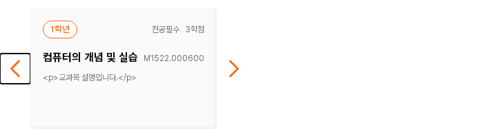
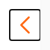

초점도 하나의 규칙으로
DS-019 화살표 표시 적용 완료 · 공통 초점 모양은 제안먼저, 확정한 내용
DS-019 적용: 교과목 카드 행에 키보드 초점이 들어오면 기존 호버처럼 양쪽 화살표가 보인다. 주황·44px 그림·배치·평소 숨김은 유지한다.

검색은 DS-017 호버 색과 DS-018 클릭 영역 적용 완료. 입력 추가 외곽선 제거는 DS-012로 유지한다.
같게 맞출 것과 배경에 따라 바꿀 것
현재: 대부분 브라우저 기본 표시, 일부 선택 컨트롤은 별도 2px 테두리를 쓴다. 기본 표시 자체가 잘못된 것은 아니지만, 같은 역할에서 일관되게 사용할 공통 기준이 필요하다.
추천: 초점은 지금 키보드로 조작할 대상을 알려주도록 둘레에 표시한다. 선택·호버의 배경색과 구분한다.
- 버튼·아이콘 버튼·링크·선택 컨트롤: 2px 실선, 바깥 간격 2px.
- 밝은 면: 짙은 회색 #404040. 어두운 면: 흰색 #ffffff.
- 밝고 어두운 면에 걸치는 곳: 짙은 바깥선과 흰 보조선을 함께 사용. 헤더 검색처럼 선 일부가 다른 배경에 놓여도 보이게 한다.
- 텍스트 입력: 기존 캐럿·텍스트 선택을 유지하고 추가 외곽선은 넣지 않는다.
- 표시 시점: 키보드 조작 등 초점 표시가 필요한 상태에 적용한다. 일반 마우스 클릭마다 강제로 표시하지 않는다.
2px 선·2px 간격은 교수 정렬의 기존 값을 출발점으로 정한 DS 제안이다. 접근성 AA에서 이 숫자를 필수로 지정한 것은 아니다. 필요한 것은 초점 위치가 보이는 방식이다. WCAG 2.4.7 설명.
실제 화면에서 초점 모양 비교
현재 초점 표시

공통 규칙 제안

밝은 면의 화살표: 2px 짙은 회색 선과 2px 간격. 그림·버튼 크기는 같다.
Tab으로 직접 확인하기
시작 버튼을 누르고 Tab으로 이동해 보자. 선택 컨트롤 안에서는 방향키로 이동할 수 있다. 견본 버튼은 저장이나 검색을 실행하지 않는다.
밝은 면 · 짙은 회색 초점
어두운 면 · 흰색 초점검색 바 경계 · 두 색 표시
선택과 초점은 별개
선택은 채움, 초점은 둘레로 구분한다.
직접 입력하거나 텍스트를 선택해 볼 수 있다.
이번 판단 · F-Q1
버튼·링크·선택 컨트롤은 이 둘레 규칙으로 통일하고, 입력은 기존 캐럿을 유지할까?
승인 후 공통 스타일과 대표 사용처부터 적용하고, 컴포넌트별로 잘림·간격·줄바꿈·강제 색상 모드를 확인한다. 사진 배경이나 복합 컨트롤에 자동으로 확대 적용하지 않는다.